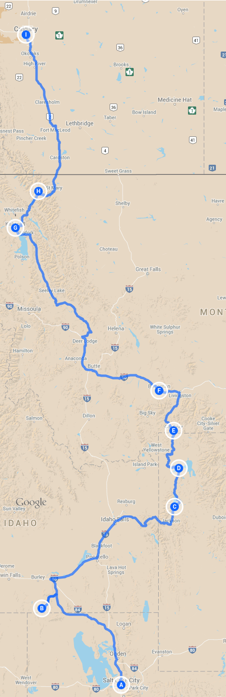

We have big plans for the first bit of our trip. 3 National parks, 4 states, and 2 countries.

The total base mileage for the trip will be about 5,000 miles. This stretch will be a little over 1,000, not including extra stops.
Starting from Salt Lake City, we're going to head up to City of Rocks to get back into climbing shape. Next, we're going to move North East towards Grand Teton National Park, (I hear The Grand is a solid adventure...). From there, we'll enter into the insanity of Yellowstone. Having only been to Yellowstone for a day or two in my life I'm excited to go back, but the crowds may chase us away earlier then expected.
Leaving Yellowstone, we'll start driving towards Glacier National Park, with a quick stop in Bozeman along the way. If we can fit it in the car, some skiing in Glacier would be fantastic, need to get at it before they're all gone right?
Once we've done a few big hikes, maybe skied a few glaciers, we cross the border into Canada. The next stop is Calgary to meet up with our friend Eric, and head off into some of Canada's National Parks!